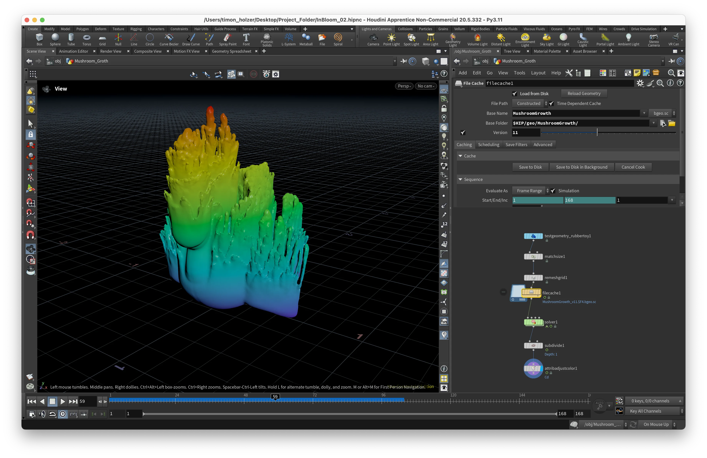
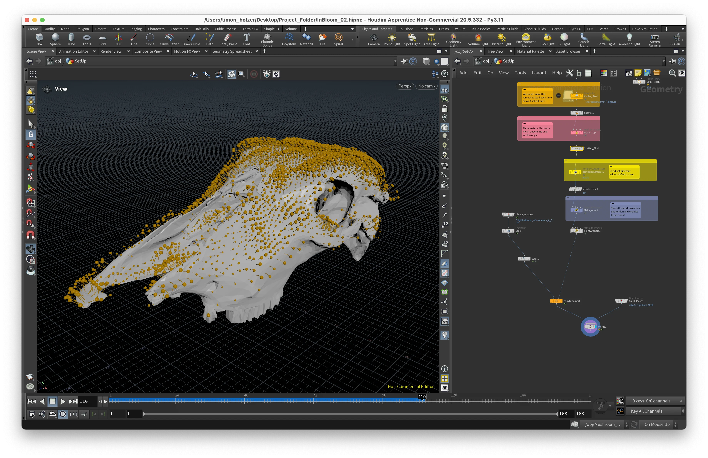

Workflow :
The whole project was produced in Houdini with a focus on Procedural Practices. From setting up the scene, the material, and all the proceduralism to then rendering it with Karma.
As this was my first big project in Houdini, a lot of the applied techniques and code have been learned from tutorials and documentation and further adjusted to achieve the required look. A steep but very rewarding learning curve!

